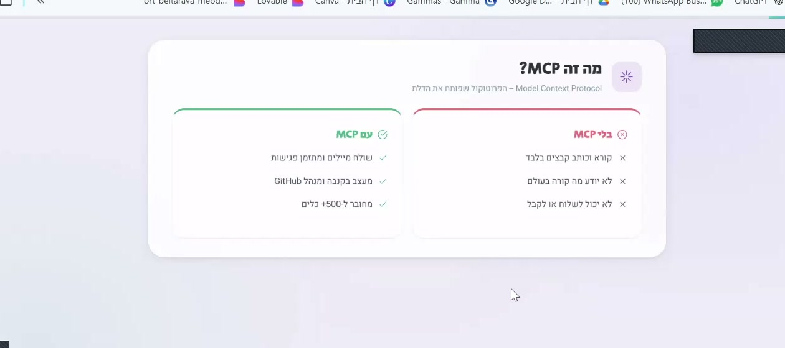
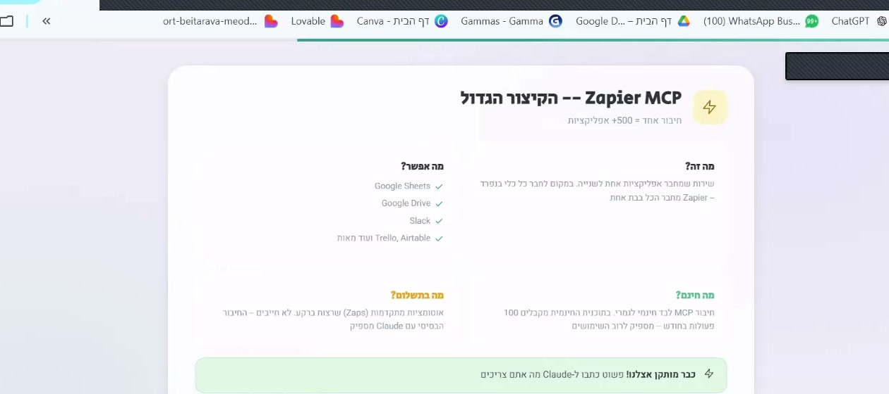
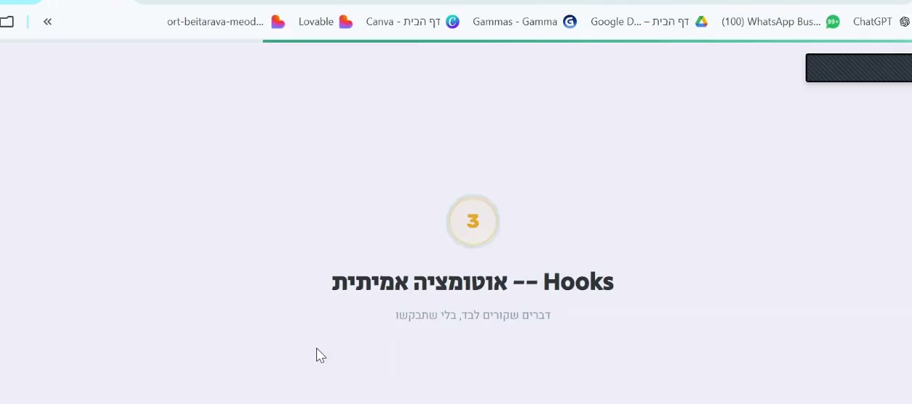
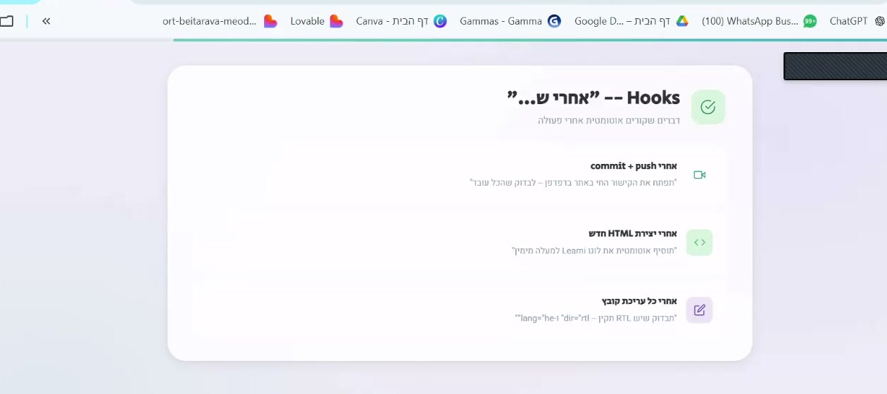
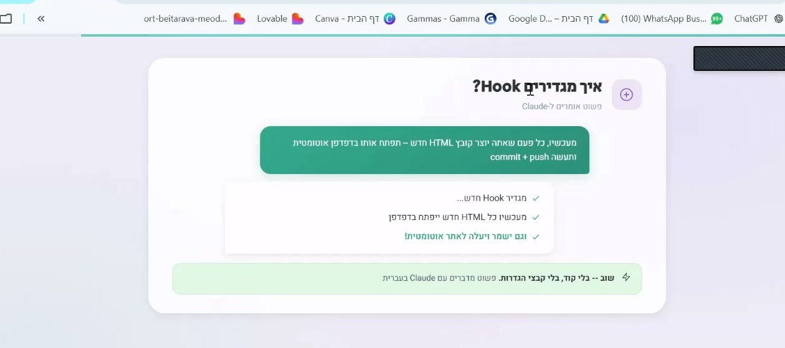
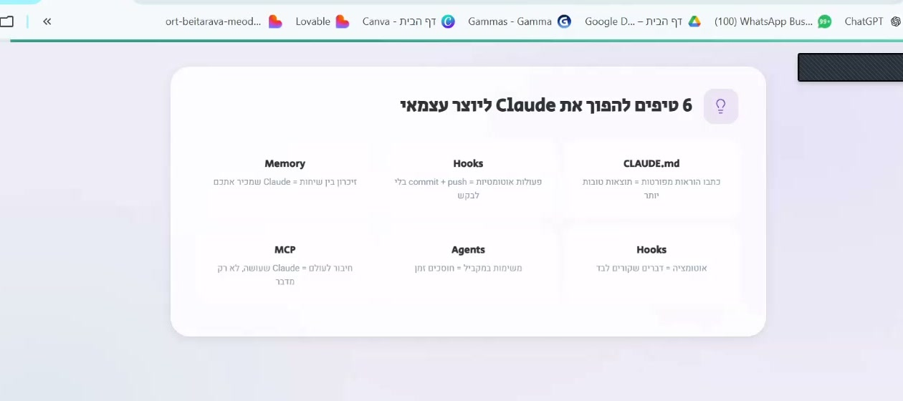

שיעור 3.1 מה זה MCP — חיבור לעולם
MCP בשפה פשוטה
MCP זה קיצור של Model Context Protocol — אבל בואו נשכח מהשם הטכני. בפשטות: MCP הוא הדרך לחבר את Claude לכלים חיצוניים.
חשבו על זה כמו תקעים בקיר. הקיר הוא Claude, והתקעים מחברים אותו ל-Gmail, ללוח שנה, ל-Canva, ל-Google Sheets, ולעוד עשרות כלים.
בלי MCP
בלי MCP, Claude עובד רק עם הקבצים שנמצאים על המחשב שלכם. הוא יכול ליצור קבצים, לערוך אותם, ולמחוק אותם — אבל זה הכל. הוא לא יכול לשלוח מייל, לקבוע פגישה, או ליצור עיצוב ב-Canva.
עם MCP
עם MCP, Claude הופך לעוזר אישי שמחובר לכל הכלים שלכם:
- שולח מיילים דרך Gmail
- יוצר אירועים בלוח השנה
- מעצב גרפיקה ב-Canva
- קורא וכותב נתונים ב-Google Sheets
- מנהל קבצים ב-Google Drive

שקף מתוך ההדרכה: ההבדל בין Claude בלי MCP לבין Claude עם MCP
MCP הופך את Claude מכלי מקומי לעוזר אישי שמחובר לכל החיים הדיגיטליים שלכם. במקום לעבוד רק עם קבצים — הוא עובד עם הכלים שאתם משתמשים בהם כל יום.
חשבו על 3 כלים שאתם משתמשים בהם יום-יום שהייתם רוצים לחבר ל-Claude. לדוגמה: Gmail, WhatsApp, Google Docs, Canva, לוח שנה.
שיעור 3.2 Gmail + Calendar + Drive
חיבור Gmail
עם חיבור Gmail, Claude יכול:
- לקרוא את המיילים שלכם ולסכם אותם
- לכתוב טיוטות של מיילים בשבילכם
- לחפש מייל ספציפי לפי נושא, שולח, או תאריך
- לסדר את תיבת המייל לפי עדיפות
חיבור לוח שנה
עם חיבור לוח השנה, Claude יכול:
- ליצור אירועים חדשים
- לבדוק מתי יש לכם זמן פנוי
- לתזמן פגישות עם אנשים אחרים
- לשלוח תזכורות לפני אירועים
חיבור Google Drive
עם חיבור Drive, Claude מקבל גישה לקבצים שלכם בענן. הוא יכול לקרוא מסמכים, ליצור חדשים, ולשתף אותם עם אחרים.
איך מחברים? 3 שלבים
- פתיחת הגדרות MCP — בתוך Claude Code, גשו להגדרות ומצאו את החלק של MCP
- הוספת שרת — בחרו את Gmail, Calendar, או Drive מרשימת השרתים הזמינים
- אישור הרשאות — ייפתח חלון שמבקש אישור לגשת לחשבון Google שלכם. אשרו, וזהו.
לא חייבים לערוך קבצים בעצמכם. פשוט כתבו ל-Claude: "תחבר לי את Gmail דרך Zapier MCP" — והוא יגדיר את הכל אוטומטית. אם אתם מעדיפים להבין מה קורה מאחורי הקלעים, הנה ההסבר:
הקוד למטה נראה מסובך? זה בסדר! בפועל אתם רק מעתיקים ומדביקים — ומחליפים YOUR_KEY במפתח שלכם:

Zapier MCP — חיבור אחד = 500+ אפליקציות. חינם לשימוש בסיסי
היכנסו ל-actions.zapier.com, צרו חשבון חינמי, הפעילו את ה-MCP integration, והעתיקו את הקישור האישי שלכם.
אתם נותנים ל-Claude גישה לחשבון Google שלכם. כמה כללים חשובים:
- Claude לא ישלח מייל בלי שתבקשו — אבל הוא יכול לקרוא את כל המיילים שלכם
- אם יש לכם מיילים עם מידע רגיש, שקלו להשתמש בחשבון Google נפרד לניסויים
- תמיד בדקו מה Claude מתכנן לעשות לפני שמאשרים פעולה
חברו את Gmail ובקשו מ-Claude לסכם את 5 המיילים האחרונים שלכם. שימו לב לדיוק הסיכום — האם הוא תפס את הנקודות העיקריות?
שיעור 3.3 Canva + Google Sheets
חיבור Canva
Canva הוא כלי עיצוב גרפי פופולרי. עם חיבור MCP, Claude יכול:
- ליצור עיצובים חדשים ב-Canva ישירות מפקודה בעברית
- להשתמש ב-Brand Kit שלכם — לוגו, צבעים, פונטים (של בית ספר, עסק, או מותג אישי)
- לייצא עיצובים ל-PDF או תמונה
- לערוך עיצובים קיימים
חיבור Google Sheets
Google Sheets הוא כלי מעולה לניהול נתונים. עם חיבור MCP, Claude יכול:
- לקרוא נתונים מגיליון קיים
- להוסיף שורות חדשות
- לנתח נתונים ולהציג תובנות
- ליצור גיליונות חדשים
דוגמה — תוכן מותאם אישית עם נתונים מ-Sheets
נגיד שיש לכם רשימת אנשים ב-Google Sheets — תלמידים, לקוחות, או חברי צוות. אתם אומרים ל-Claude: "צור גלויה/הזמנה אישית לכל שם מהרשימה" — ו-Claude קורא את השמות מהגיליון, יוצר עיצוב ב-Canva לכל אחד, ומייצא הכל ל-PDF. מתאים גם לתעודות, הזמנות לאירוע, או מיילים מותאמים אישית.
דוגמה — טופס שנשמר אוטומטית
Claude יכול לבנות טופס HTML יפה — הרשמה לאירוע, הזמנת שירות, טופס פנייה, או משוב לקוחות. כשמישהו ממלא את הטופס — הנתונים נשמרים אוטומטית ב-Google Sheets. אין צורך במתכנת. הכל קורה דרך Google Apps Script.
Google Apps Script מאפשר ליצור webhook שמחבר כל טופס HTML ל-Google Sheets. זה אומר שכל טופס שתבנו יכול לשמור נתונים אוטומטית — בלי שרת, בלי תשלום.
בחרו אחת מהאפשרויות: צרו עיצוב ב-Canva דרך Claude, או בנו טופס הרשמה פשוט שנשמר ל-Google Sheets. שתפו את התוצאה.
שיעור 3.4 אוטומציה — Hooks + סוכנים

Hooks — דברים שקורים לבד, בלי שתבקשו
מה זה Hooks?
Hooks הם פקודות שרצות אוטומטית בזמנים מסוימים. למשל: כל פעם שאתם שומרים קובץ, או כל פעם שאתם עושים commit לקוד. אתם מגדירים פעם אחת מה צריך לקרות — ומשם זה עובד לבד.
כתבו ל-Claude: "תגדיר לי Hook שפותח את הדפדפן אחרי כל יצירת HTML" — והוא יעשה את ההגדרה לבד. מי שרוצה להבין מה קורה בפנים:
- PreToolUse — רץ לפני שClaude משתמש בכלי (למשל: אישור לפני מחיקת קובץ)
- PostToolUse — רץ אחרי שClaude סיים פעולה (למשל: פתיחת HTML בדפדפן)
- Notification — רץ כשClaude שולח הודעה (למשל: צליל התראה)

דוגמאות ל-Hooks מסוג "אחרי ש..." — פעולות אוטומטיות

איך מגדירים Hook — הגדרה פשוטה בקובץ settings.json
דוגמה — בדיקת איכות אוטומטית
אפשר להגדיר Hook שמריץ בדיקת איכות אחרי כל commit. הוא בודק שאין שגיאות בקוד, שכל הקישורים עובדים, ושהעברית כתובה נכון. אם יש בעיה — הוא מתריע מיד.
דוגמה — פתיחת דפדפן אוטומטית
אפשר להגדיר Hook שפותח את הדפדפן אוטומטית כל פעם ש-Claude יוצר קובץ HTML. ככה אתם רואים את התוצאה מיד, בלי לחפש את הקובץ ולפתוח אותו ידנית.
סוכנים ברקע
סוכנים הם Claude שעובד ברקע, בלי שתצטרכו להיות מול המחשב. באמצעות Claude API, אפשר ליצור סוכן שעובד לבד ומעדכן תוכן באופן אוטומטי.
דוגמה: סוכן טיפים יומי שמוסיף טיפ חדש לאתר כל בוקר בשעה 7:00. בלי שאף אחד צריך לעשות כלום — הטיפ מתעדכן לבד כל יום.
למה אוטומציה חשובה?
אוטומציה חוסכת זמן על משימות שחוזרות על עצמן. במקום לעשות את אותו הדבר כל יום — אתם מגדירים פעם אחת, והמערכת עובדת בשבילכם. זה נותן לכם זמן להתמקד בדברים שבאמת חשובים — ללמד, לנהל, ליצור, או לפתח את העסק.

6 טיפים להפוך את Claude ליוצר עצמאי — Memory, Hooks, CLAUDE.md, MCP, Agents, Models
אוטומציה היא המקום שבו Claude Code הופך ממרשים למשנה חיים. ברגע שמשהו עובד לבד — אתם מרוויחים זמן כל יום, בלי מאמץ נוסף.
הגדירו Hook אחד שמריץ פעולה אוטומטית בפרויקט שלכם. לדוגמה: בדיקת איכות אחרי commit, או פתיחת דפדפן אחרי יצירת HTML.
- Zapier KEY לא עובד? — ודאו שהעתקתם את הקישור המלא (כולל /sse בסוף). אם עדיין לא עובד, צרו KEY חדש ב-actions.zapier.com
- "MCP server disconnected"? — סגרו את Claude Code ופתחו מחדש. אם ממשיך, בדקו חיבור אינטרנט
- Claude לא רואה את Gmail/Calendar? — ודאו שאישרתם הרשאות ב-Zapier. לחצו על "Manage connections" ובדקו שהחיבור פעיל
- Hook לא רץ? — בדקו שה-matcher תואם (רגיש לאותיות גדולות/קטנות). כתבו ל-Claude: "תבדוק למה ה-Hook שלי לא עובד"
- הגעתם למגבלת שימוש (rate limit)? — חכו 30 דקות, או השתמשו ב-
/compactלצמצום ההקשר. אם קורה לעתים קרובות, שקלו שדרוג ל-Max
- Claude Pro ($20/חודש) — כולל מכסת שימוש יומית. אם נגמרת, צריך לחכות או לשדרג
- Claude Max ($100/חודש) — מכסה גדולה יותר, מתאים למי שמשתמש הרבה
- טיפ לחיסכון: השתמשו ב-
/compactכדי לדחוס את ההקשר ולחסוך tokens. וב-/clearכשמתחילים נושא חדש
פרטיות ואבטחת מידע
כשמחברים כלים חיצוניים, חשוב להבין מה קורה עם המידע שלכם:
- אל תזינו מידע רגיש — פרטי מטופלים, מספרי תעודת זהות, סיסמאות, נתונים פיננסיים אישיים. Claude הוא שירות ענן — המידע עובר דרך שרתים חיצוניים
- Gmail/Drive — שימו לב מה אתם חושפים — כשמחברים Gmail, Claude יכול לקרוא את המיילים שלכם. אם יש מיילים עם מידע רגיש (רפואי, משפטי, פיננסי) — חשבו פעמיים
- Google Sheets עם נתונים אישיים — אם הגיליון מכיל שמות ופרטים אישיים (תלמידים, לקוחות, מטופלים), שקלו לעבוד עם נתונים אנונימיים
- GitHub Pages הוא פומבי — כל מה שמפורסם ב-GitHub Pages גלוי לכולם. לעולם אל תכללו מידע אישי בקבצים שמפורסמים
אם לא הייתם שולחים את המידע הזה במייל לאדם זר — אל תזינו אותו ל-Claude. השתמשו בנתונים לדוגמה בזמן הלמידה, ובמידע אמיתי רק כשאתם בטוחים שזה בסדר.
אם אתם כפופים לחובת סודיות מקצועית — רפואה, רווחה, משפט, ייעוץ, פסיכולוגיה — שימו לב: שימוש בכלי ענן עם נתוני מטופלים/לקוחות עלול להפר חוק הגנת הפרטיות ונהלי הארגון שלכם. בדקו את מדיניות הארגון לפני שימוש עם נתונים אמיתיים. בזמן הלמידה, עבדו אך ורק עם נתונים בדויים לדוגמה.
בדיקת ידע — מודול 3
1. מה זה MCP?
2. מה אפשר לעשות עם חיבור Gmail?
3. מה זה Hook?